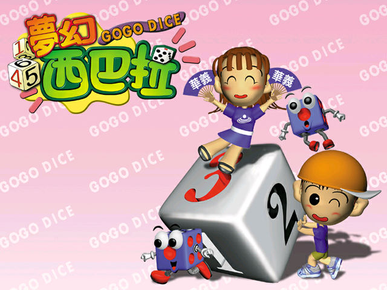
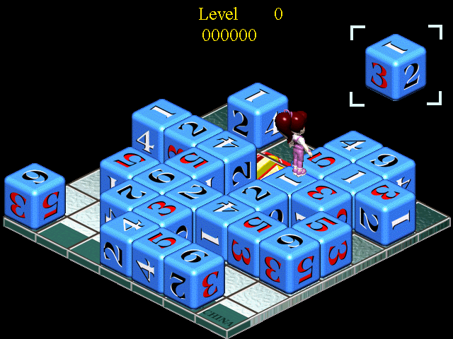

名稱：夢幻西巴拉 (GoGo Dice，中文版)
簡介：盤古1999年出品的益智遊戲，由華義代理發行。遊戲規則為玩家推動骰子翻面，只要
相同數字的骰子連接數量和該面向上的點數一樣時即可消去 [待補]。


保護：光碟，破解碼：
gogo.exe
75 21 50 68 34
EB -- -- -- --
備註：非安裝移機者，需設定下列Registry：
[HKEY_LOCAL_MACHINE\SOFTWARE\Waei\夢幻西巴拉\1.00.000]
"Waei Majang Path"="."
"wave"=".\\wav"
"avi"=".\\avi"
"ani"=".\\ani"
"map"=".\\map"
"save"=".\\save"
"source"="."
備註：XP以上系統雖可執行，但遊戲時會有貼圖覆蓋現象，建議在Win9x系統上執行。
備註：遊戲需要vids:IV32解碼程式，否則會看不到動畫。